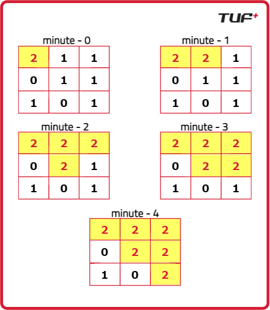
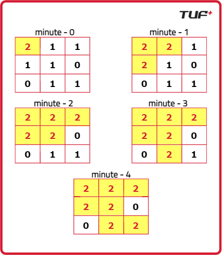
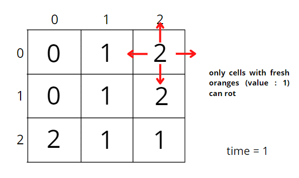
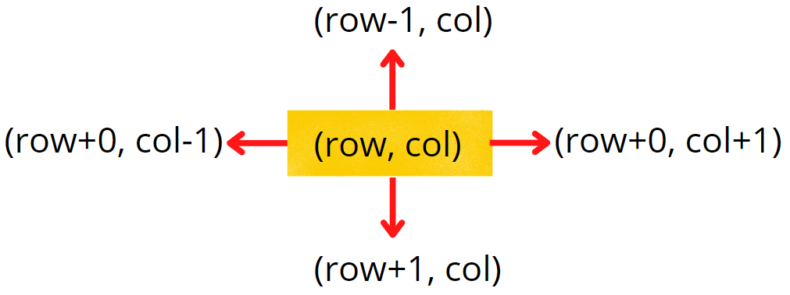
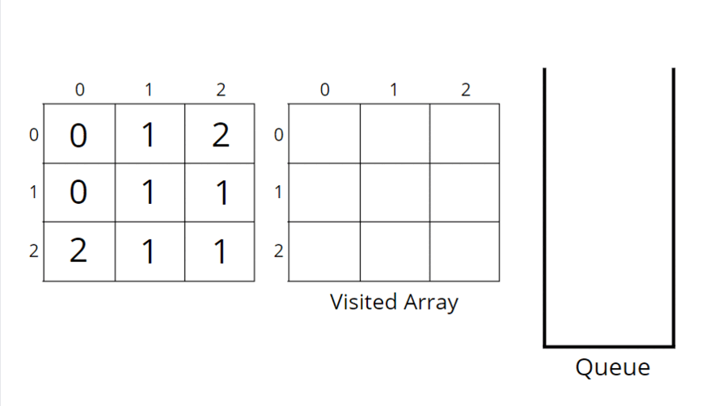

Rotten Oranges : Min time to rot all oranges : BFS
Problem Statement: Given an n x m grid, where each cell has the following values :
2 - represents a rotten orange ,
1 - represents a Fresh orange ,
0 - represents an Empty Cell .
Every minute, if a fresh orange is adjacent to a rotten orange in 4-direction ( upward, downwards, right, and left ) it becomes rotten.
Return the minimum number of minutes required such that none of the cells has a Fresh Orange. If it's not possible, return -1..
Examples
Input :grid = [ [2, 1, 1] , [0, 1, 1] , [1, 0, 1] ] Output :-1 Explanation : Orange at (3,0) cannot be rotten.

Input :grid = [ [2,1,1] , [1,1,0] , [0,1,1] ] Output :4 Explanation :
Disclaimer: Here is the practice link to help you assess your knowledge better. It's highly recommend trying to solve it before looking at the solution.
Approach
Algorithm
- First of all, we will create a Queue data structure to store the coordinates of Rotten Oranges.
- We will also have variables:
- Total_oranges - It will store the total number of oranges in the grid (Rotten + Fresh).
- Count - It will store the total number of oranges rotten by us.
- Total_time - Total time taken to rot all reachable oranges.
- After this, we will traverse the whole grid and count the total number of oranges in the grid and store it in Total_oranges. Then we will also push the rotten oranges into the Queue data structure.
- Now, while our queue is not empty, we will pick up each Rotten Orange and check in all 4 directions whether a Fresh orange is present or not. If it is present, we will make it rotten, push it into our queue, and pop out the Rotten Orange whose work is now done.
- We will also keep track of the count of rotten oranges as we go.
- If we rot some oranges, then obviously our queue will not be empty. In that case, we will increase our total time. This continues until our queue becomes empty.
- Once the queue becomes empty, we will check whether the total number of oranges initially is equal to the count of rotten oranges. If yes, we will return the total time taken. Otherwise, we return -1 because some fresh oranges are still left and cannot be made rotten.



Code
#include <bits/stdc++.h>
using namespace std;
// Function to calculate minimum time required to rot all fresh oranges
int orangesRotting(vector<vector<int>>& grid) {
// If the grid is empty, return 0 as no oranges exist
if (grid.empty()) return 0;
// Get number of rows and columns in the grid
int m = grid.size();
int n = grid[0].size();
// Variable to store the number of minutes passed
int days = 0;
// Variable to store total number of oranges (fresh + rotten)
int tot = 0;
// Variable to count how many oranges became rotten during the process
int cnt = 0;
// Queue to store positions of currently rotten oranges
queue<pair<int, int>> rotten;
// Traverse the grid to count total oranges and push rotten ones to the queue
for (int i = 0; i < m; ++i) {
for (int j = 0; j < n; ++j) {
// If the cell is not empty (has fresh or rotten orange)
if (grid[i][j] != 0)
tot++; // Count it as a valid orange
// If it's a rotten orange, add its position to the queue
if (grid[i][j] == 2)
rotten.push({i, j});
}
}
// Arrays to explore the 4 directions: right, left, down, up
int dx[4] = {0, 0, 1, -1};
int dy[4] = {1, -1, 0, 0};
// BFS traversal until all possible fresh oranges are rotted
while (!rotten.empty()) {
// Number of rotten oranges to process at this minute
int k = rotten.size();
// Add these many oranges to the count of rotted oranges
cnt += k;
// Process all rotten oranges at this time step
while (k--) {
// Get the front orange from the queue
int x = rotten.front().first;
int y = rotten.front().second;
rotten.pop();
// Check all 4 directions
for (int i = 0; i < 4; ++i) {
int nx = x + dx[i]; // New x-coordinate
int ny = y + dy[i]; // New y-coordinate
// Skip invalid coordinates or already rotten/empty cells
if (nx < 0 || ny < 0 || nx >= m || ny >= n || grid[nx][ny] != 1)
continue;
// Mark the fresh orange as rotten
grid[nx][ny] = 2;
// Add its position to the queue to process in the next minute
rotten.push({nx, ny});
}
}
// If new oranges were added to the queue, increase the time
if (!rotten.empty())
days++;
}
// If all oranges are rotted, return total minutes passed
// Otherwise, some fresh oranges are left unreachable, return -1
return tot == cnt ? days : -1;
}
// Driver code
int main() {
// Input grid with 2 = rotten, 1 = fresh, 0 = empty
vector<vector<int>> v{{2, 1, 1},
{1, 1, 0},
{0, 1, 1}};
// Call the function to calculate minimum time required
int rotting = orangesRotting(v);
// Output the result
cout << "Minimum Number of Minutes Required " << rotting << endl;
return 0;
}
Complexity Analysis
Time Complexity: O(n × n × 4) In the worst case, every cell in the grid may contain an orange, and for each rotten orange we explore 4 directions (up, down, left, right). So we iterate through all cells (n × n) and perform 4 operations per orange. Hence, the complexity becomes O(n × n × 4), which simplifies to O(n²).
Space Complexity: O(n × n) In the worst case, all the oranges might be rotten and will be stored in the queue simultaneously. The maximum size of the queue can be equal to the total number of oranges in the grid, i.e., n × n. Therefore, the space complexity is O(n²).